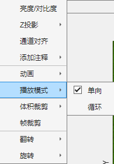
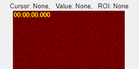
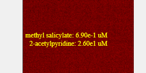
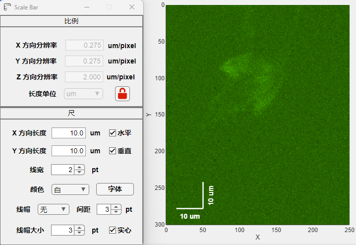

1.2.6 添加注释

添加注释可用于在当前图像上叠加注释，包括时间戳，比例尺与元数据。

时间戳的显示格式为hh:mm:ss.SSS, 即时分秒形式。

通过读入具有特定格式的元数据文件(Excel表格文件)，可在当前图像上叠加显示额外信息。图例标记为两种固定浓度的气味分子混合溶液。

点击比例尺，在弹出的窗口中调整分辨率(通常情况下可从图像文件中自动读取)。设置比例尺在X或Y方向的长度，勾选“水平”或“垂直”可得对应线段。另外，也可调整比例尺的颜色等属性。
注1：鼠标左键单击文本标签，此时激活“移动”模式，标签将跟随鼠标运动，直至再次单击。
注2：鼠标左键单击比例尺，此时激活“移动”模式，比例尺将跟随鼠标运动，直至再次单击。
注3：鼠标中键单击文本标签，此时可更改标签字体。
注4：鼠标右键单击文本标签，此时可更改字体颜色。
注5：所有注释在“导出影片”时均被保留，但不影响“导出图像”。